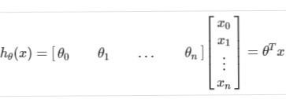
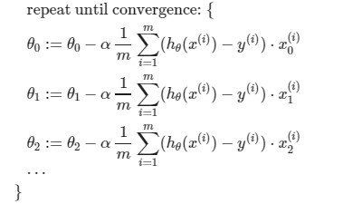
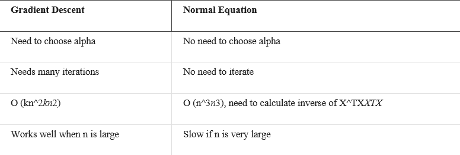

Linear Regression with Multiple Variable
Greetings! This is Parv Arora and I have done certification in Machine Learning. So, in this series of blogs, I am going to give you a full tutorial on machine learning .Our next topic is Linear Regression in multiple variable.
Linear Regression with Multiple Variable
Linear regression with multiple variables is also known as "multivariate linear regression".
We now introduce notation for equations where we can have any number of input variables.
x(i)j = value of feature j in the ith training example
x(i) = the input (features) of the ith training example
m = the number of training examples
n = the number of features
The multivariable form of the hypothesis function accommodating these multiple features is as follows:
hθ(x)=θ0+θ1X1+θ2X2+θ3X3+⋯+θnXn
In order to develop intuition about this function, we can think about θ0 as the basic price of a house, θ1 as the price per square meter, θ2 as the price per floor, etc. x1 will be the number of square meters in the house, x2 the number of floors, etc.
Using the definition of matrix multiplication, our multivariable hypothesis function can be concisely represented as:

Gradient Descent for Multiple Variables
The gradient descent equation itself is generally the same form; we just have to repeat it for our 'n' features:

Polynomial Regression
Our hypothesis function need not be linear (a straight line) if that does not fit the data well.
We can change the behavior or curve of our hypothesis function by making it a quadratic, cubic or square root function (or any other form).
For example, if our hypothesis function is hθ(x)=θ0+θ1x1 then we can create additional features based on x1, to get the quadratic function hθ(x)=θ0+θ1x1+θ2x12 or the cubic hθ(x)=θ0+θ1x1+θ2x12+θ3x13
In the cubic version, we have created new features x2 and x3 where x2=x12 and x3=x13.
To make it a square root function, we could do: hθ(x)=θ0+θ1x1+θ2x1
One important thing to keep in mind is, if you choose your features this way then feature scaling becomes very important.
eg. if x1 has range 1 - 1000 then range of x12 becomes 1 - 1000000 and that of x13 becomes 1 - 1000000000
Normal Equation
Gradient descent gives one way of minimizing J. Let’s discuss a second way of doing so, this time performing the minimization explicitly and without resorting to an iterative algorithm. In the "Normal Equation" method, we will minimize J by explicitly taking its derivatives with respect to the θj’s, and setting them to zero. This allows us to find the optimum theta without iteration. The normal equation formula is given below:
θ = (XTX)−1XTy
There is no need to do feature scaling with the normal equation.
The following is a comparison of gradient descent and the normal equation:

With the normal equation, computing the inversion has complexity O(n3). So if we have a very large number of features, the normal equation will be slow. In practice, when n exceeds 10,000 it might be a good time to go from a normal solution to an iterative process.
Normal Equation Noninvertibility
When implementing the normal equation in octave we want to use the 'pinv' function rather than 'inv'. The 'pinv' function will give you a value of θ even if X^TXXTX is not invertible.
If XTX is noninvertible, the common causes might be having :
• Redundant features, where two features are very closely related (i.e. they are linearly dependent)
• Too many features (e.g. m ≤ n). In this case, delete some features or use "regularization" (to be explained in a later lesson).
Solutions to the above problems include deleting a feature that is linearly dependent with another or deleting one or more features when there are too many features.
So, this is all about Linear regression in multiple variable. Thank you to be so patient. I hope you gained a brief knowledge about the topic.
Be alert guys I will post more on Machine Learning. Feel free to provide feedback guys to help me improve my content.
• PARV ARORA
Widget is loading comments...